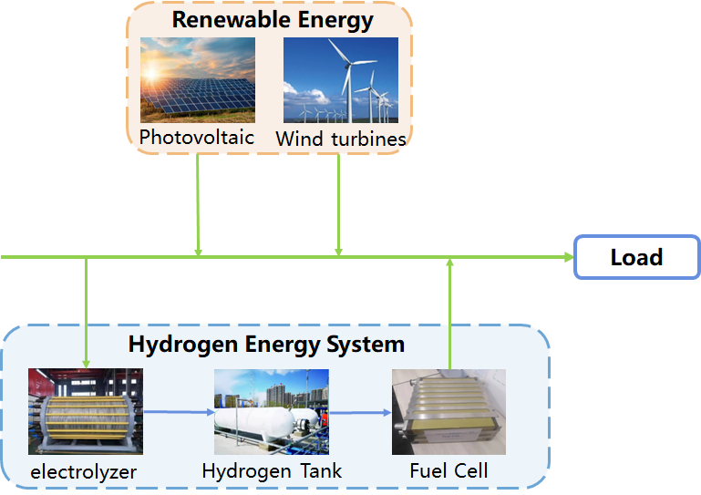
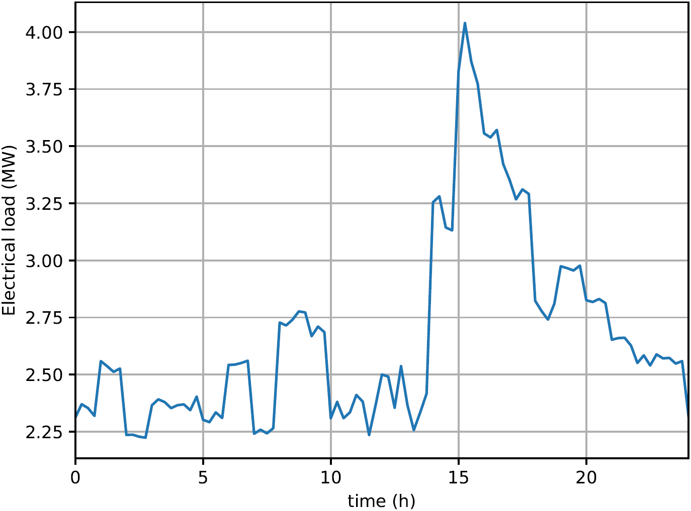
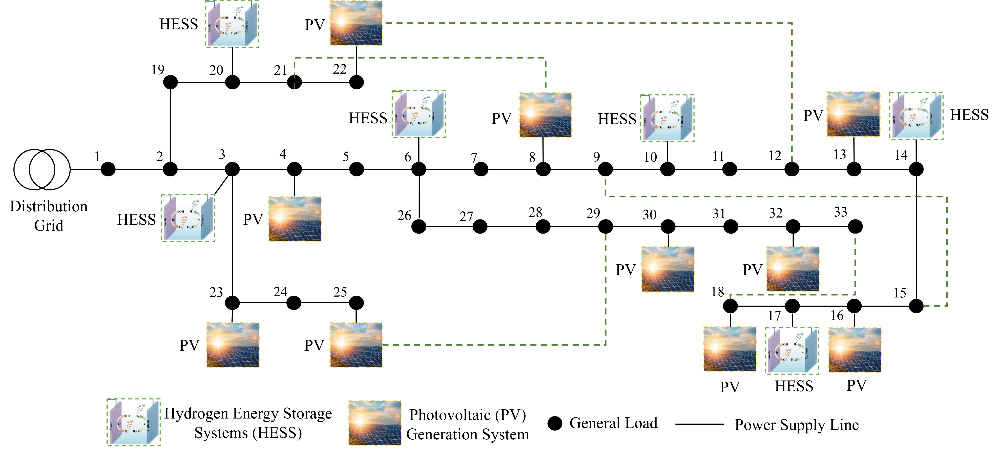
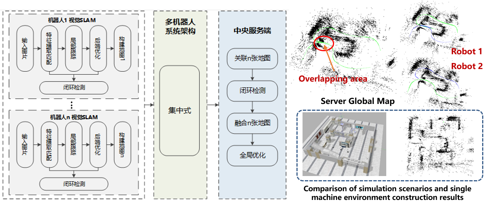

Applications
Applications: hydrogen-based power grids
Hydrogen-based microgrid systems, integrating renewable energy sources and hydrogen technology, have emerged as a promising solution for sustainable and resilient energy supply. These systems consist of distributed energy resources interconnected through communication channels, finding applications in smart grids, remote areas, and off-grid environments. The coordination and operation of hydrogen-based microgrids have become a focal point, involving aspects like optimal power dispatch, load balancing, storage management, and collaborative decision-making. Within this context, the integration of hydrogen technology presents unique challenges and opportunities. The hybrid nature of these systems, blending continuous energy generation with discrete storage and conversion processes, requires a comprehensive approach. A hydrogen-based microgrid is a dynamic entity that transitions between continuous energy flow and intermittent storage/conversion actions, demanding sophisticated control strategies for effective management. The research landscape in this domain encompasses modeling the dynamic behaviors of electrolyzers, fuel cells, and energy storage systems, while considering the two distinct timescales associated with power and hydrogen energy dynamics. Our research interest in hydrogen-based microgrid systems includes system modeling, energy management under uncertain conditions and control strategies. We mainly focus on the impact of new energy generation on the frequency stability of the power system and the modeling of the green electrolysis water hydrogen production process. In addition, we investigate the potential of two-timescale energy management strategies that exploit the flexibility of electrolyzers, fuel cells, and battery energy storage systems, as well as the establishment of operational cost minimization problems considering uncertain parameters and nonlinear constraints to achieve optimal system performance. To ensure stable system operation, new control strategies to cope with power fluctuations and reactive voltage control in the power system are also interesting topics for us.
|  |  |  |
| Microgrid system architecture | ERlectrical loads | 33-bus distribution network |
Applications: unmanned system
Perception and motion planning are important functions of autonomous unmanned systems, and they are interdependent and complementary. On the one hand, good perception and information fusion capabilities can provide accurate environmental information for motion planning; On the other hand, by planning motion trajectories with abundant information, the perception effect of the system can be effectively improved. Our research revolves around two core areas: perception and motion planning. We propose multi machine collaborative SLAM algorithms based on LiDAR and vision for environmental perception and mapping in large scenes, respectively, to improve the accuracy and efficiency of mapping in large scenes; A motion planning algorithm based on reinforcement learning and graph neural network fusion is proposed for autonomous unmanned systems in unknown dynamic environments to enhance the robustness of the algorithm. At the same time, we have achieved significant results in the formation control of unmanned systems, and have independently developed multiple unmanned system simulation platforms, providing good technical support for algorithm verification.
|  |

|
| Multi robot indoor environment visual collaborative mapping | Multi robot outdoor large-scale environment laser collaborative mapping |

|

|
| Single agent mapless reinforcement learning navigation based on radar information | Mobile robot navigation based on reinforcement learning in dynamic pedestrian scenes |

|

|
| Multi robot formation control based on artificial potential field and fuzzy control | Formation of Multiple Mobile Robots Based on Behavior Method |

|

|
| 3D multi-agent collaborative control visualization simulation software | 3D multi-agent collaborative control visualization simulation software based on DoS attack |

|
| 3D multi-agent path planning visualization simulation software based on reinforcement learning |